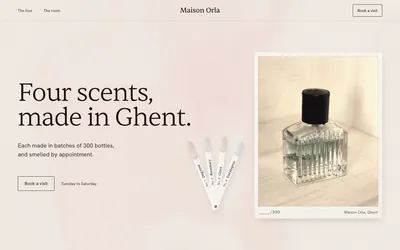
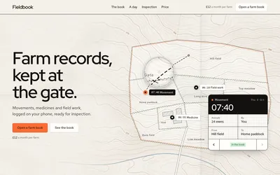
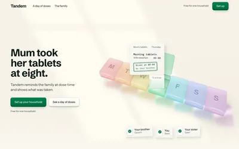
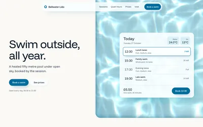
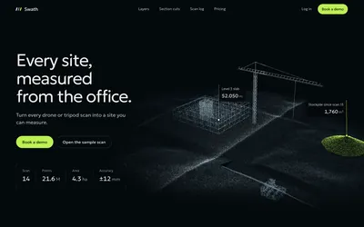
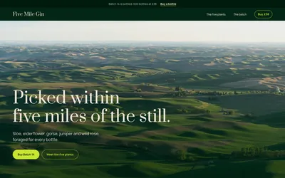

本文是 Nutlope/hallmark 官方 README 的完整中文翻译（快照 2026-10-28，非官方译本，以英文原文为准）。
Hallmark
一个面向 Claude Code、Codex、Cursor 与 OpenCode 的设计 skill，拒绝让界面看起来像 AI 生成的。
usehallmark.com · 五十个主题 · 支持定制 · 指名即做重设计与审计
由 Together AI 出品。
Hallmark 守住一条硬底线，然后就不碍事。它从五十种材质的主题目录里发三张牌，围绕访客来的目的搭建页面，再在真实浏览器里对着那些一眼机造的破绽 lint 结果：每个标题上方那行眉题、加字距的大写标签、标题里那个孤零零的彩色词、满页空框或满页照片、对不准屏幕的 hero、每页结尾的邮件订阅框、说了谢谢却什么都没发出去的表单。最后一票在新会话评审手里。
关卡分层级。底线（Floor）绝不允许上线（对比度、焦点、减弱动效、编造的事实、坏掉的手机布局）。惯性（Reflex）关卡是模型总会掉进去的默认坑；一次构建若有正当理由，可以在记录在案的前提下推翻其中一条。收尾（Finish）检查是手艺细节，永远不拦上线。
v2 新增
- 五十个主题。每个主题都是一种材质（纸、字体、颜色、表面，带自己的组件与质感），配一张成品页的照片，构建就在其中排出它自己的页面。
- 从差事出发。预约页面管预约，商店管卖货，简报管订阅：行动按钮待在它的品类该在的位置，页面也在它那里收尾。
- 定制。要一张定制页，Hallmark 就只凭你的提示词设计，遵守同一套规则与检查。
- 你真实的产品。给它一个 URL、一个开发服务器或一个应用，它自己去截屏。
- 真实照片。755 张开放许可照片，按拍摄对象挑选，并在页面上署名。
- 重设计与审计。
/hallmark redesign <path>重建页面并保留内容与接线；/hallmark audit <path>只报告不动手。
主题
 |
 |
 |
 |
|
| Dusk Closewise，银行对账 |
Cobalt Relay，一个 webhook API |
Studio Field Office，一间品牌识别工作室 |
Atelier Maison Orla，一间香水工作室 |
Ribbon Lull，一个助眠声音应用 |
 |
 |
 |
 |
 |
| Furrow Fieldbook，农场账目 |
Dose Tandem，一个家庭用药应用 |
Refract Bellwater Lido，一座露天泳池 |
Vantage Swath，工地扫描 |
Hedgerow Five Mile Gin，一家酿酒厂 |
五十个里的十个。主题是一种材质，不是一份图纸：它从不说页面里放什么、按什么顺序放，所以同一主题下的两句提示词会得到两张不同的页面。每个主题是 references/themes/ 里一个至多 8 KB 的文件，旁边配一张图；一次构建只读一个。全部主题见 usehallmark.com。
定制
说一声 custom，Hallmark 就放下主题：没有方案、没有组件、没有配色配方，只剩底线、关卡，和 direction.md 里的一条短指令——找到只属于这位客户的那一个想法，让它带着整页跑。
一次构建怎么跑
- Pre-flight 读取项目（字体、色板、框架、一份已锁定的
design.md），并只问一次素材：照片、截图、真实数字。什么都不编造。 scripts/theme.mjs deal挑出三张贴合提示词且无不良记录的主题；draw按页面的差事发牌它的骨架。- hero 先单独建好、渲染并在页面其余部分尚不存在时冷眼评审。
scripts/sloplint.mjs --render在八种宽度下检查页面，然后一个子代理带着全新的视角评审。
每一页都是自包含的 HTML 与 CSS，在首个 CSS 注释里盖章记录它做过的决定。
重设计
Hallmark 从不主动在已有设计上开工，除非你指名道姓：
/hallmark redesign ./src/app
/hallmark audit ./index.html完整重设计保留内容与接线，换掉系统与布局；说一句 keep the layout 就改成重定样式，说 polish 就只修那些破绽。sloplint --before 先记录每一条链接、字段、处理器和标题，sloplint --kept 会在少了一条时判重设计失败，交付物是前后并排的对照。
安装
npx skills add nutlope/hallmark -g带 -g 装给所有项目；不带就只装进当前项目。需要 Node 18 或更高版本。浏览器检查（sloplint --render、截图）还需要 npm i -g puppeteer-core 和 Chrome；没有它们，静态检查照常可跑。
| Harness | 安装位置 | 调用方式 |
|---|---|---|
| Claude Code | ~/.claude/skills/hallmark | /hallmark <prompt>，或直接描述一次新构建 |
| Codex CLI | ~/.agents/skills/hallmark | $hallmark <prompt>，或直接描述一次新构建 |
| Cursor | 自己找到上面装好的副本 | /hallmark <prompt>，或直接描述一次新构建 |
| OpenCode | 自己找到上面装好的副本 | /hallmark <prompt>，或直接描述一次新构建 |
- 只装一个 harness：
npx skills add nutlope/hallmark -g --agent claude-code（或codex、opencode、cursor、github-copilot）。 - 作为 Claude Code 插件：
/plugin marketplace add nutlope/hallmark，然后/plugin install hallmark@hallmark（以/hallmark:hallmark调用）。 - 从克隆安装：
node skills/hallmark/scripts/install.mjs会在复制前校验每一个主题与参考文件；install-hook.mjs给 Claude Code 加一个编辑时的底线检查。 - lint 任何页面：
node skills/hallmark/scripts/sloplint.mjs <file-or-dir> --render。 - 如果它没有自己接手，点名它：use hallmark to build ...。
许可证
MIT。随便用，随便 fork，随便上线。
照片库（skills/hallmark/scripts/photos.json）只登记托管在 Wikimedia Commons 上的照片，本身不含任何图片文件。每张照片保留各自的许可（CC0、公有领域、CC BY 或 CC BY-SA），Hallmark 在每一页用到的地方都署名。它不使用图库网站（Unsplash、Pexels、Pixabay）——那些条款禁止 AI 工具挑选它们的图片。